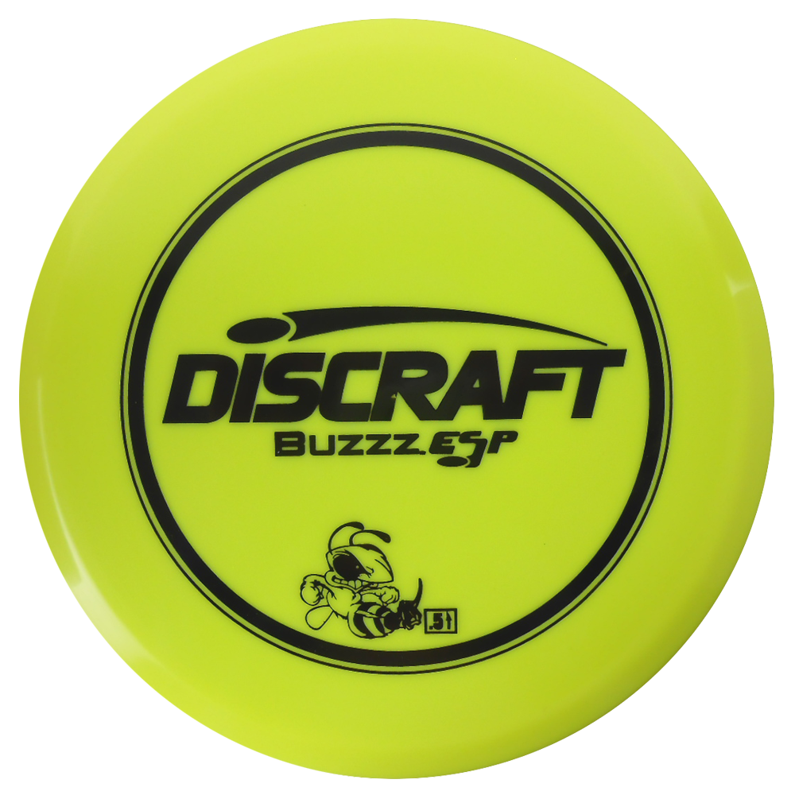
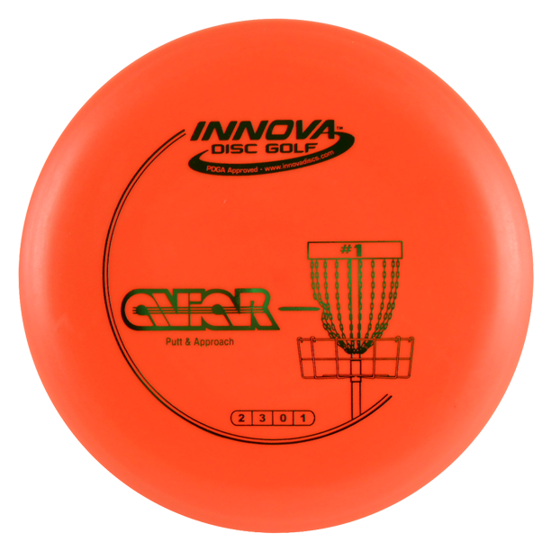
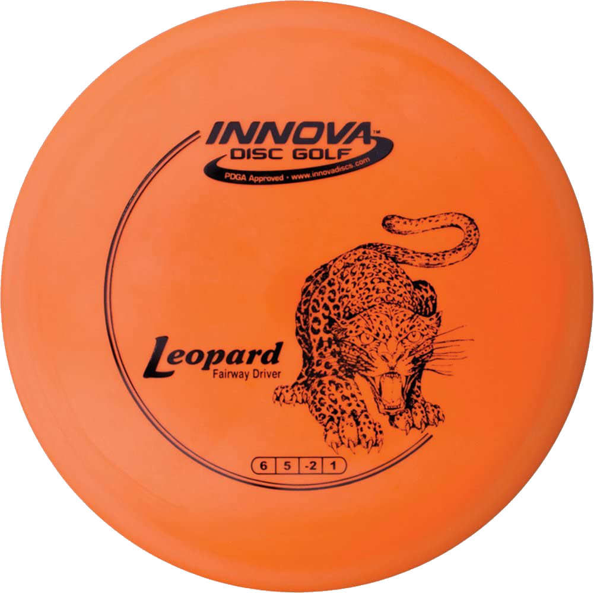
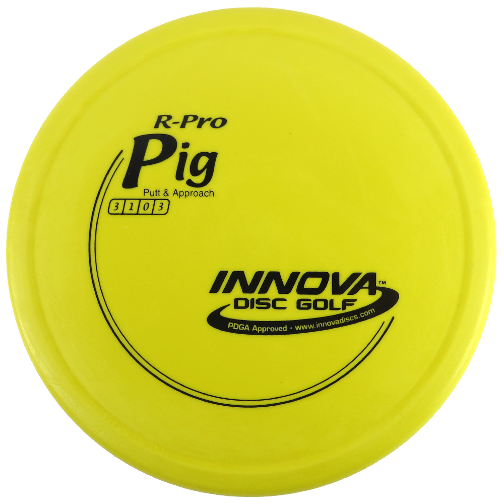
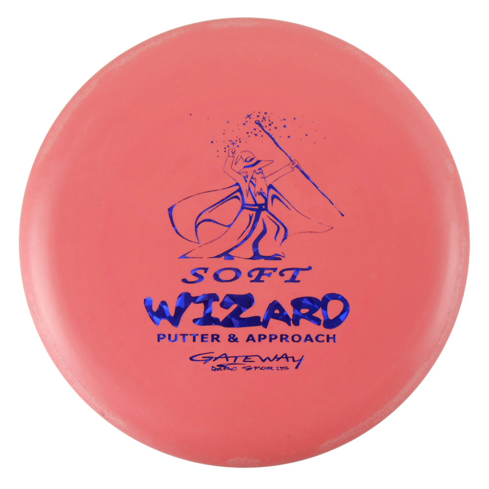
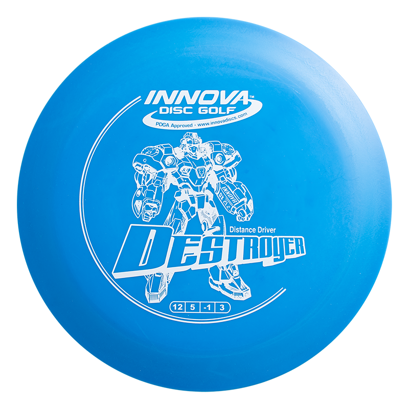

Discs & Gear
These discs are some of our recommendations for beginners to use when starting disc golf. Click anywhere on the flight rating column for a description of it!
| Disc | Disc Type | Flight Rating | Description |
|---|---|---|---|
|  Buzzz |
Mid-Range | Speed: 5 Glide: 4 Turn: -1 Fade: 1 Stability: 0.5 |
A must-have disc for players of all skill levels. Buzzz is a straight flying mid-range disc that is extremely versatile. A player can do well on most courses using only this disc and a putter! |
|  Aviar |
Putter | Speed: 2 Glide: 3 Turn: 0 Fade: 1 |
A reliable putt and approach disc. Aviar has a great grip and flies straight. |
|  Leopard |
Driver | Speed: 6 Glide: 5 Turn: -2 Fade: 1 |
Leopard is a great choice for a first driver. It is easy to throw and cover a long distance without a crazy flight path. |
|  Pig |
Putter | Speed: 3 Glide: 1 Turn: 0 Fade: 3 |
The Pig is a stable putter that doesn't have much glide. This allows its shots to be predictable, even when throwing against the wind. |
|  Wizard |
Putter | Speed: 2 Glide: 3 Turn: 0 Fade: 2 |
The Wizard is another overstable putter that is a popular choice among disc golf players. Its consistency makes it versatile for not only putting, but also approaches and short drives. |
|  Destroyer |
Driver | Speed: 12 Glide: 5 Turn: -1 Fade: 3 |
Destroyer is a very fast and stable driver. It is a great disc for getting distance on a forehand throw. |